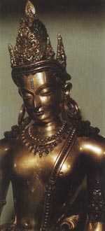

Авалокитешвара ("бог співчуття", "бог, який дивиться вниз", "бог погляду"), в буддійськії міфології уособлення співчуття, ботхисатва нинішнього століття. Зазвичай його зображували у вигляді красивого чоловіка з кількома головами і руками. Відповідно до одного з міфів, Авалокитешвара дивився на людські страждання, і його серце розірвалося від горя. Амитабха, від якого стався Авалокитешвара, зібрав шматочки серця і зробив Бодхисатвами дев'ять нових голів.
Авалокитешвара хотів допомогти всім живим істотам, тому у нього виросли 1000 рук, а на долоні кожної руки з'явився очей. "З його очей утворилися сонце і місяць, з чола - Махешвара, з плечей - Брахма та інші боги, з серця - Нараяна, зі стегон - Сарасваті, з рота - вітри, з ступень - земля, з живота - Варуна".
Авалокитешвара допомагав усім, хто просив допомоги і проповідував буддійські закони тим, хто перевтілився в комах або хробаків, захищав людей від хвороб і благословляв дітей. У Китаї Авалокитешвара трансформувався в богиню Гуаньінь, а в Японії - в Каннон, в індуїзмі він може виступати як Ганеша, Шива або Вішну.